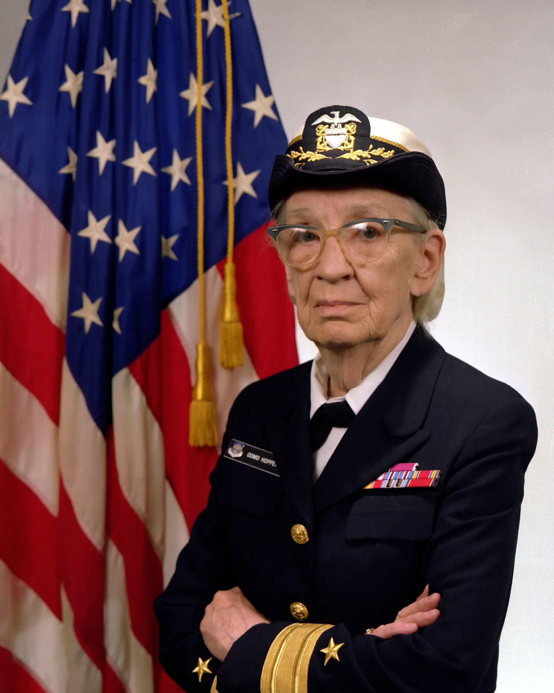

Admiral Grace Hopper was a Imprtant figure in the field of computer science. Her contributions led to the development of many english-based programming languages including COBOL which was one of the first wide spread programming languages based around using everyday language.
Though modern programming has taken the concept of a English-based language for granted, in the early days computer programming computers could only understand machine code and it was considered impossible to make a computer understand everyday language. this made it so that even after she made her first prototype many people wouldn't use it because they assumed it wouldn't work.
“i had a running compiler and nobody would touch it... they carefully told me, computers could only do arithmetic; they could not do programs.”